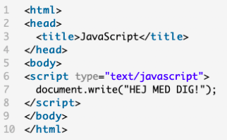
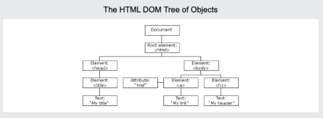

javascript
JavaScript er et scripting-sprog, som du kan bruge til at gøre din hjemmeside interaktiv/dynamisk (dit indhold kan ændres afhængig af input fra brugeren). Med JavaScript kan du f.eks. lave popup-vinduer, en personlig hilsen til dine besøgende, en lommeregner, en besøgstæller, billede-slider, advarsels pop up og meget mere.

DOM
The Document Object Model (DOM) is a programming API for HTML and XML documents. It defines the logical structure of documents and the way a document is accessed and manipulated.
With the Document Object Model, programmers can create and build documents, navigate their structure, and add, modify, or delete elements and content. Anything found in an HTML or XML document can be accessed, changed, deleted, or added using the Document Object Model
HTML og CSS er fint til at sætte en hjemmeside op, men for at manipulere den og gøre den mere interaktiv skal man bruge DOM(Document object model). Det er her hvor javascript kommer ind i billedet, da DOM er bygget på Javascript. DOM er bare et interface der gør det lettere for programmører at manipulere med hjemmesider med javascript.
